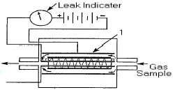
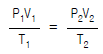
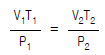
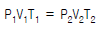
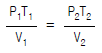
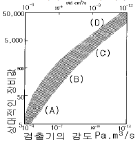

누설비파괴검사기사(구) (2004-05-23 기출문제)
1과목: 누설시험원리
1. 다음 중 와전류탐상검사에서 검출이 가능한 것은?
- 금속판의 열처리 상태
- 유리판의 표면 결함
- 플라스틱판의 표층부 결함
- 유리봉의 표층부 결함
(정답률: 알수없음)

2. 진공상자 발(기)포누설시험에 사용하는 압력게이지의 적정 범위는?
- 0~5psi
- 0~10psi
- 0~15psi
- 0~20psi
(정답률: 알수없음)
3. 다음 할로겐누설감지기 또는 검출기 중에서 실질적으로 감도가 가장 크다고 알려진 것은?
- 할로겐 화합물 토치(torch)
- 민감한 할로겐 화합물의 페인트
- 민감한 할로겐 화합물의 테이프
- 할로겐 다이오드 검출기
(정답률: 알수없음)
4. 다음 중 헬륨질량누설시험의 지시로 알 수 있는 것이 아닌 것은?
- 누설의 존재
- 누설의 위치
- 누설량
- 누설의 생성원인
(정답률: 알수없음)
5. 그림은 할로겐 다이오드 누설 검출기의 구조이다. 번호 1의 이름은?

- 히터
- 음극 집속기
- 양극 방출기(anode emitter)
- 반사 그리드(repeller grid)
(정답률: 알수없음)
6. 밀봉된 시험체에 대한 진공침지법 발포시험(bubble test)시에 요구되는 시스템의 최소 압력차는?
- latm
- 2atm
- 3atm
- 4atm
(정답률: 알수없음)
7. 누설측정시 검지가스를 희석시켜야할 필요가 있다. 이 희석된 가스를 만드는 이유로써 틀린 설명은?
- 순수가스를 사용할 경우 많은 비용이 든다.
- 낮은 농도의 가스를 쓰면 좀더 안정되고 선형적인 기기 응답을 얻는다.
- 가연성 가스는 폭발 또는 인화의 위험이 있기 때문이다.
- 희석 가스는 인체에 해롭지 않기 때문에 반드시 희석 가스를 쓰도록 한다.
(정답률: 알수없음)
8. 기체 방사성 동위원소법 중 Kr-85의 사용에 대한 설명으로 틀린 것은?
- 10-6Pa.m3/s보다 큰 누설률을 갖는 거대누설을 검지할 수 있다.
- 밀봉선 다량의 전자제품을 동시에 침지시킬 수 있다.
- 다른 추적가스를 사용할 때 보다 2~6배 정도 빠르다.
- 기체 세척 후 계수할 때까지의 시간이 길어지면 검사하기 어렵다.
(정답률: 알수없음)
9. 가압이 가능하고 부피의 팽창, 수축이 가능한 공간에서 압력이 30psi일 때 부피가 15cm3 라면, 압력이 45psi일 때의 부피는? (단, 온도는 일정하다.)
- 5cm3
- 7cm3
- 8cm3
- 10cm3
(정답률: 알수없음)
10. 이상기체에 대한 온도, 압력 및 부피에 관한 식으로 압력을 P1, P2, 부피를 V1, V2, 온도를 T1, T2라 할 때 다음 중 맞는 것은?




(정답률: 알수없음)
11. 다음 중 표준 대기압(1atm)을 나타낸 것으로 틀린 것은?
- 760torr
- 760㎜Hg
- 101.3㎪
- 1,013bar
(정답률: 알수없음)
12. Agar-Agar용액을 이용한 CO2가스 누설시험에서 CO2가 누설 부위에 나타나는 색깔은?
- 흰 점
- 검정 반점
- 붉은 피막
- 노란 반점
(정답률: 알수없음)
13. 대형 제품의 압력변화에 의한 누설검사시 충전가스의 노 점을 측정하는 이유는 무엇을 결정하기 위함인가?
- 물의 증기압
- 온도별 수증기 효과
- 초기 콘크리트로부터 생기는 수증기의 양
- 순환 및 냉각팬의 전기적 단락방지 목적의 수분함량 측정
(정답률: 알수없음)
14. 100L(리터)의 챔버가 1x10-4 Torr의 압력을 받고 있다. 가스 1std.cc(cm3)가 기체 방출(outgassing) 원인으로 생겨났을 경우 표시될 압력으로 맞는 것은?(단, 보일의 법칙을 이용할 것)
- 7.7x10-4 torr
- 7.7x10-3 torr
- 7.7x10-2 torr
- 7.7x10-1 torr
(정답률: 알수없음)
15. 다음 중 발(기)포 누설시험에서 감도에 영향을 주는 요인이 아닌 것은?
- 누설 경계에서의 압력 차이
- 누설을 통과하는 추적가스의 종류
- 시험 표면 조건
- 기포를 형성하는 시험 용액의 무게
(정답률: 알수없음)
16. 다른 누설검사법과 비교하여 가열양극 할로겐누설검사법의 장점이 아닌 것은?
- 대기압 하에서 작업할 수 있다.
- 모든 가스에 응답한다.
- 기름에 막혀 있는 누설을 검출할 수 있다.
- 사용이 간편하고, 휴대용이며 능률적이다.
(정답률: 알수없음)
17. 발포시험(bubble test)에 의해 아주 미세한 누설결함을 검출하고자 할 때 누설시험용 용액을 시험면에 적용하는 방법을 바르게 설명한 것은?
- 기포가 생기지 않도록 상대적으로 얇게 도포한다.
- 시험면을 전처리하면 미세한 누설결함이 손상되므로 전처리하지 않고 도포한다.
- 두꺼운 거품이 형성되도록 도포한다.
- 용액을 관찰하기 적어도 5분전에 도포한다.
(정답률: 알수없음)
18. 헬륨질량분석 누설시험에서 기체시료 분석의 바탕 원리에 대한 설명으로 맞는 것은?
- 추적자 가스만 이온화하여 자기장 속을 통과한다.
- 추적자 가스의 음이온들과 양이온들이 자기장 속을 통과하여 검출기에 함께 잡힌다.
- 시료의 모든 가스들은 헬륨질량분석계의 자기장 속을 통과할 수 있다.
- 추적자 가스의 양이온들만 자기장 속에서 다른 가스들의 이온들과는 다른 곡률 반경을 갖는다.
(정답률: 알수없음)
19. 다음 중 열적 현상을 이용한 비파괴검사법에 해당되지 않는 것은?
- 광탄성법
- 서리시험
- 형광서모그래피
- 적외선 검출기
(정답률: 알수없음)
20. 다음 중 표면결함을 검출하는데 적합한 비파괴검사법은?
- 방사선투과검사
- 초음파탐상검사
- 침투탐상검사
- 누설검사
(정답률: 알수없음)
2과목: 누설검사
21. 할로겐다이오드누설시험 절차서는 추적자 가스로 R-12를 지정하고 있다. 이 가스의 화학식으로 맞는 것은?
- CCl3F
- CClF3
- CHClF2
- CCl2F2
(정답률: 알수없음)
22. 가열 양극 할로겐법의 장점에 대한 설명으로 틀린 것은?
- 특별한 누설시험 시스템없이 누설량을 측정할 수 있다.
- 대기압 하에서 작업할 수 있다.
- 할로겐 추적가스에만 응답할 수 있다.
- 기름에 막혀 있는(Oil-Clogged) 누설을 검출할 수 있다.
(정답률: 알수없음)
23. 헬륨질량분석기로 누설검사중 검사기의 감도가 규정치에 10% 미달되었다. 어떤 조치가 필요한가?
- 보정해서 계속 검사한다.
- 앞에 보정하여 검사했던 곳부터 다시 검사한다.
- 10%는 별 무리가 없어 그대로 계속 검사를 수행한다.
- 앞에 한 검사물은 파기하고 새로이 시행한다.
(정답률: 알수없음)
24. 헬륨질량분석기로 압력용기의 누설 여부를 검사할 때 프로브 시험법을 적용하였다. 프로브로 압력용기를 탐상하여 누설이 계기상에 검지되었다면 누설의 발생 위치는?
- 현재의 프로브 위치가 누설발생 위치이다.
- 현재의 프로브 위치보다 탐상 방향으로 약간 앞이 누설발생 위치이다.
- 현재의 프로브 위치보다 탐상 방향으로 약간 뒤쪽이 누설발생 위치이다.
- 장비의 특성에 따라 달라지게 된다.
(정답률: 알수없음)
25. 동적 누설시험의 감도와 응답에 영향을 줄 요소가 아닌것은?
- 추적자 가스의 물리적 성질
- 집적된 추적자 가스를 배기시키기 위한 펌프질 속도
- 누적되는 추적자 가스를 누설이 없는 시험챔버에 집적시키는 시간
- 추적자 가스를 검출할 검출기의 감도
(정답률: 알수없음)
26. 헬륨질량분석 누설검출기의 프로드법에 대한 정화시간을 설명한 것 중 맞는 것은?
- 추적가스가 시험시스템에 들어오는 것을 정지했을 때 기기내 추적가스의 농도가 37%까지 감소하는데 걸리는 시간
- 추적가스가 시험시스템에 들어오는 것을 정지했을 때 기기내 추적가스의 농도가 20%까지 감소하는데 걸리는 시간
- 추적가스가 시험시스템에 들어오는 것을 정지했을 때 장치의 검출 출력신호가 37%까지 감소하는데 걸리는 시간
- 추적가스가 시험시스템에 들어오는 것을 정지했을 때 장치의 검출 출력신호가 20%까지 감소하는데 걸리는 시간
(정답률: 알수없음)
27. 열 양극할로겐 누설검출기(heated anode halogen leak detector)의 한계점으로 볼 수 없는 것은?
- 높은 인화성 재질 근처, 또는 폭발성 가스가 혼합되어 있는 대기에서 사용하기가 부적절하다.
- 할로겐 추적가스에 장시간 노출되면 누설신호가 사라 질 수 있다.
- 할로겐 검출기는 대기와 분리되어 있어 시험물체의 주변 공기에 포함된 할로겐 물질과는 거리가 멀다.
- 스니퍼 튜브 통과시간에 따라 응답시간이 길어질 수있다.
(정답률: 알수없음)
28. 다음 중 발포누설검사에서 감도에 영향을 주지 않는것은?
- 표면 조건
- 시험시간 증가
- 누설 경계에서의 압력차이
- 누설을 통과하는 추적가스의 종류
(정답률: 알수없음)
29. 다음 중 면적식 유량계의 설명으로 적합하지 못한 것은?
- 고점도 유체 및 슬러리 유체 측정에 적합하다.
- 압력손실이 적고 진동에 약하다.
- 구조가 복잡하고, 큰 유량 측정에 적합하다.
- 수직으로 부착하지 않으면 오차가 발생한다.
(정답률: 알수없음)
30. 누설시험의 가압법에 이용되는 기체가 아닌 것은?
- 산소
- 질소
- 아르곤
- 공기
(정답률: 알수없음)
31. 인장강도 41kg/mm2, 항복강도 25kg/mm2, 관벽 두께 8.7mm 및 관 외경 813mm인 압력 배관용 강관을 수압시험시 수압은 얼마인가? (단, 허용응력은 항복강도의 60%로 한다.)
- 32.1kg/cm2
- 15.0kg/cm2
- 39.6kg/cm2
- 24.6kg/cm2
(정답률: 알수없음)
32. 그림은 누설시험 장비의 상대적 비용(세로축)과 누설시험 감도의 범위(가로축)를 개략적으로 나타낸 것이다. (A)에 해당되는 누설시험법은?

- 기포 누설시험
- 할로겐다이오드누설시험
- 질량분석누설시험
- 방사성물질 추적자 누설시험
(정답률: 알수없음)
33. 탱크의 용적 1000ℓ , 배기속도 10ℓ /sec, 전체가스 부하 100torr.ℓ /sec, 누설량 10torr.ℓ /sec의 경우, 탱크압력이 5%로 떨어지는 시간은?
- 29초
- 39초
- 49초
- 69초
(정답률: 알수없음)
34. 단시간(15분∼1시간 사이)의 압력변화시험인 경우 대체로 생략할 수 있는 것은?
- 예비 시험
- 게이지 압력의 측정
- 대기압의 측정
- 압력 라인의 일부를 폐쇄 또는 개폐한 시험
(정답률: 알수없음)
35. 가스 실린더에서 감압 조절장치를 쓰는 근본 목적은?
- 압력의 급상승 방지
- 일정한 가스의 공급
- 압력의 변동방지
- 가스의 누출방지
(정답률: 알수없음)
36. 압력용기의 누설검사에 사용되는 검사 방법으로 누설의 위치 확인이 어려운 검사법은?
- 기포시험(bubble test)
- 유동검출시험(flow detection test)
- 화학반응시험(chemical-reaction test)
- 헬륨질량분석시험(He mass spectrometer test)
(정답률: 알수없음)
37. 다음 누설검사법 중 감도가 제일 높은 것은?
- Helium 누설시험
- Halogen 누설시험
- 비누방울 시험
- 수압시험
(정답률: 알수없음)
38. 헬륨 스니퍼시험법(He Sniffer method)에서 연결된 관의 길이는 어느 정도여야 하는가?
- 4.5m이하
- 5 ∼ 10m
- 10 ∼ 15m
- 16 ∼ 20m
(정답률: 알수없음)
39. 암모니아 기체가 누설되어 염화수소 기체와 접촉할 때 나타나는 현상은?
- 흰색 연기가 발생한다.
- 흰 반점이 발생한다.
- 자주색 연기가 발생한다.
- 자주색 반점이 발생한다.
(정답률: 알수없음)
40. 누설시험에서 감도(sensitivity)의 설명으로 틀린 것은?
- 측정할 물리적인 최소의 누설 크기
- 쉽고 간단하게 검출 가능한 검출기의 성능
- 표준 누설시험법에 의하여 표준 누설과 견주어 결정되는 누설
- 누설시험에서 시험기간 동안 지정된 누출량의 최소 크기
(정답률: 알수없음)
3과목: 누설관련규격
41. 인터넷을 사용하고자 할 때 Windows 98에서 전화접속을 통해 PPP접속을 하는 절차로 맞는 것은?
- 전화접속 네트워킹 설치 → TCP/IP 설치 → PPP 접속 환경 설정
- TCP/IP 설치 → 전화접속 네트워킹 설치 → PPP 접속 환경 설정
- TCP/IP 설치 → PPP 접속환경 설정 → 전화접속 네트워킹 설치
- 전화접속 네트워킹 설치 → PPP 접속환경 설정 → TCP/IP 설치
(정답률: 알수없음)
42. ASME Sec.V의 발포누설검사(Bubble Test)에서 시험한 결과에 대한 평가가 잘못된 것은?
- 기포가 발생되지 않는 부분은 합격처리 한다.
- 누설된 부위는 표기한다.
- 누설된 부위는 규정에 따라 수정한다.
- 수정된 부위는 발포누설검사외의 다른 방법으로 재시험한다.
(정답률: 알수없음)
43. ASME Sec.VⅢ Div.1에 의거한 수압시험 압력은?(단, 최대 사용 압력 : 120kgf/cm2, 설계온도에서의 응력 : 40kgf/mm2, 시험온도에서의 응력 : 32kgf/mm2)
- 225kgf/cm2
- 180kgf/cm2
- 144kgf/cm2
- 120kgf/cm2
(정답률: 알수없음)
44. KEPIC(전력산업기술기준) MEN 8101 "누설검사 일반기준"에서 전공식 발(기)포검사시의 기포 용액의 설명 중 틀린것은?
- 용액은 온도에 적합할 것
- 형성된 기포는 낮은 표면 장력에서 터지지 말것
- 국부적인 면적의 압력차로 기포를 형성할 것
- 세척용 비누나 합성세제는 사용할 수 있다.
(정답률: 알수없음)
45. ASME Sec.Ⅴ에서 진공상자 시험법으로 시험을 수행할 때 시험체의 표면온도 조건으로 올바른 것은?
- 20℉ ~ 100℉
- 30℉ ~ 130℉
- 40℉ ~ 125℉
- 50℉ ~ 130℉
(정답률: 알수없음)
46. ASME Sec.V에 의해 할로겐다이오드 누설검사를 하였을 경우, 지시의 판정중 옳은 것은?
- 누설율 1×10-4std.cm3/sec이하일 때는 합격
- 누설율 1×10-3std.cm3/sec이하일 때는 합격
- 누설율 1×10-2std.cm3/sec이하일 때는 합격
- 누설율 1×10-1stdcm3./sec이하일 때는 합격
(정답률: 알수없음)
47. ASME 규격에서 다음 중 가장 감도가 낮은 누설검사법은?
- Radioisotope leak test
- Halogen leak test
- Helium mass spectrometer leak test
- Bubble leak test
(정답률: 알수없음)
48. ASME Sec.V Art.10에 따라 질소로 가압한 압력용기의 누설여부를 검사하기 위한 발(기)포시험법에서 시험체 표면에 적용하는 검사액중 가장 적절한 것은?
- 가정용 세제나 청정제
- 시험체에 무해한 발포성 비눗물
- 석회유액
- 점성이 큰 고무액
(정답률: 알수없음)
49. 개인이 각종 정보를 제공받고 관리하기 위해 사용하는 것으로 메모에서부터 워드 프로세서, 인터넷, 게임 등을 제공하는 컴퓨터는?
- PDA
- PCA
- HDA
- HCA
(정답률: 알수없음)
50. ASTM E 499에서 검출 프로브형 질량분석 누설검출기를 사용한 누설검사법에 대한 설명으로 틀린 것은?
- 이 방법으로 누설위치 검출이 가능하다.
- 이 방법에는 직접 프로빙(Direct probing)법과 집적(Accumulation)법이 있다.
- 직접 프로빙 법은 대기압쪽으로 누설이 될 때에도 사용되지만, 검사면의 반대쪽은 추적기체로 가압되어야 한다.
- 집적법에서 얻어질 수 있는 감도는 금속부품이나, 고무, 플라스틱 등이 노출되어 있는 부품이나 동일감도로 검사가 가능하다.
(정답률: 알수없음)
51. 다음 중 HTML Tag의 사용이 잘못된 것은?
- <HEAD><TITLE>가로선 긋기</HEAD></TITLE>
- <A HREF = "http://www.aaa.domain"> 심마니로</A>
- <IMG SRC = "data/art1.jpg" width="250" height="100" border = "10">
- <BODY BACKGROUND = "data/background.jpt" TEXT = "#ff0000"></BODY>
(정답률: 알수없음)
52. ASME Sec.Ⅷ Div.1에 의거하면, 수압시험 대신에 공압시험을 할 수 있게 되어 있다. 공압시험을 할 수 있는 경우에 해당하는 것은?
- 공기 또는 질소가스가 경제성이 있고 위험하지 않을 경우
- 수압시험후 뒷처리하는데 비용이 많이 드는 경우
- 공기의 기하급수적인 팽창에 의한 시험을 요하는 경우
- 설계 또는 구조상 액체를 안전하게 채울 수가 없는 경우
(정답률: 알수없음)
53. KS B 6225에서 규정한 강제 석유저장탱크의 물채우기시험 시 옆판의 각 부에 발생하는 1차 막의 응력은 재료의 ( ) 또는 내구력의 ( )%를 초과하지 않도록 한다. ( ) 안에 알맞는 것은?
- 항복점, 90
- 항복점, 120
- 인장응력, 90
- 인장응력, 120
(정답률: 알수없음)
54. KS B 6225 강재 석유저장탱크의 구조에 의거 부상 지붕배수설비의 조립 후 몸통 물채우기 시험의 절대압력은? (단, 대기압은 100㎪이다.)
- 100㎪
- 200㎪
- 300㎪
- 400㎪
(정답률: 알수없음)
55. KS B 6225에 의한 강제 석유저장탱크의 밑판, 애뉼러 플레이트의 용접부는 진공에서 누설시험을 하는데 이 경우 압력은 대기압보다 최소한 수은주로 얼마나 낮은 값으로 하여야 하는가?
- 400mm
- 300mm
- 200mm
- 100mm
(정답률: 알수없음)
56. 통신에 사용되는 음성, 영상, 데이터 등의 정보를 전송하기 위해서는 파일 전송을 위한 통신규약이 필요하다. 파일 전송에 사용되는 프로토콜이 아닌 것은?
- xmodem
- kermit
- vmodem
- zmodem
(정답률: 알수없음)
57. KS B 6230 다관원통형 열교환기에 따라 수압시험을 수행할 때 압력의 유지시간은?
- 10분 이상
- 20분 이상
- 30분 이상
- 40분 이상
(정답률: 알수없음)
58. 컴퓨터 시스템이 실제 주기억장치 용량보다 몇 배 이상의 데이타를 저장할 수 있게 하는 기억장치 관리 방법은?
- 전하 결합소자
- 가상기억장치
- 레이저 기억 시스템
- 자기버블기억장치
(정답률: 알수없음)
59. KS B 6233 육용 강제 보일러 구조에 따라 최고사용압력이 0.2MPa미만인 보일러를 수압시험하고자 한다. 적용하여야 할 압력은?
- 2MPa
- 0.2MPa
- 0.1MPa
- 1MPa
(정답률: 알수없음)
60. ASTM E1066에 의거하여 누설검사를 할 경우의 검사압력은 얼마인가?
- 설계압력의 50~150%
- 설계압력의 75~150%
- 사용압력의 50~150%
- 사용압력의 75~150%
(정답률: 알수없음)
4과목: 금속재료학
61. 치환형고용체와 관련이 가장 깊은 것은?
- Lanz's law
- Tomas's law
- Doawitz's law
- Vegard's law
(정답률: 알수없음)
62. 다음 중 응고할 때 팽창하는 금속은?
- Bi , Sb
- Au , Ag
- Sn , Pb
- Aℓ , Pb
(정답률: 알수없음)
63. 금속의 비파괴 결함검사 중 초음파 탐상에 사용되지 않는 것은?
- 불감대
- 증감지
- 에코우
- 탐촉자
(정답률: 알수없음)
64. 재료에 일정한 하중을 가하였을 경우 재료가 시간의 경과에 따라 점점 늘어감이 증가하여 파괴되는 현상은?
- 융해파괴
- 전단파괴
- 인장파괴
- 크리프파괴
(정답률: 알수없음)
65. 형상기억합금의 조성 성분으로 맞는 것은?
- Mn-B
- Co-W
- Cr-Co
- Ti-Ni
(정답률: 알수없음)
66. 양백(German silver)의 조성 범위는?
- 5-10%Pb,10-15%Au, 나머지 Cu
- 5-15%Co, 5-10%Ag, 나머지 Cu
- 10-15%Mg,10-15%Pt, 나머지 Cu
- 10-20%Ni,15-30%Zn, 나머지 Cu
(정답률: 알수없음)
67. 강의 심냉처리(Sub-zero treatment)효과로서 적절치 않은 것은?
- 잔류 시멘타이트가 안정화 된다.
- 정밀기계 부품의 조직이 안정화 된다.
- 경도가 증가하고 성능이 향상된다.
- 형상과 치수 변화가 방지된다.
(정답률: 알수없음)
68. 마그네슘 합금의 용해 및 주조시 유의하여야 할 사항이 아닌 것은?
- 고온에서의 산화방지책이 필요하다.
- 탈가스 처리를 하여야 한다.
- 주조 조직을 미세화하여야 한다.
- 용해 주조시 온도는 항상 500℃를 유지하여야 한다.
(정답률: 알수없음)
69. 항공기용 재료나 압출재료로 쓰이는 초초 듀랄루민(extra super duralumin)의 주성분은?
- Aℓ - Zn - Mg 계
- Aℓ - Mo - Ag 계
- Aℓ - Co - Si 계
- Aℓ - Si - Ni 계
(정답률: 알수없음)
70. 중력 편석이 일어나는 것으로 켈밋(kelmet)합금은?
- Co - Aℓ
- Cu - Pb
- Mn - Au
- Fe - Si
(정답률: 알수없음)
71. 처음에 주어진 특정한 모양의 것을 인장하거나 소성 변형 한 것이 가열에 의하여 원형으로 돌아가는 현상은?
- 초소형 효과 합금
- 초탄성 합금
- 제진 합금
- 형상기억 합금
(정답률: 알수없음)
72. 강의 담금질에 따르는 용적변화가 가장 큰 담금질 조직은?
- 마텐자이트
- 시멘타이트
- 오스테나이트
- 페라이트
(정답률: 알수없음)
73. 강의 취화현상 중 황에 의하여 일어 나는 현상은?
- 템퍼취성
- 저온취성
- 청열취성
- 고온취성
(정답률: 알수없음)
74. 강의 열처리에서 풀림(annealing)의 목적이 아닌 것은?
- 내부응력제거
- 연화
- 결정립의 균일화
- 표면경화
(정답률: 알수없음)
75. 오스테나이트 스테인리스강의 용접 및 열처리시 427∼871℃에서 입계에 크롬탄화물이 발생하는 가장 큰 원인은?
- 탄소가 많아서
- 탄소가 적어서
- 탄소가 없어서
- 탄소와는 관계 없음
(정답률: 알수없음)
76. Cu - Zn 계 상태도에서 공업용 황동의 상온 조직은?
- α 상 및 β상이다.
- γ상 및 δ 상이다.
- δ 상 및 ε 상이다.
- ε 상 및 η 상이다.
(정답률: 알수없음)
77. 과공석강의 표준 조직은?
- 초석 Fe3C + Pearlite
- γ고용체 + Ferrite
- β + Austenite
- δ 고용체 + Ferrite
(정답률: 알수없음)
78. 0.6% C의 중탄소강을 900℃의 γ영역으로 가열하였다가 서서히 실온까지 냉각하였을 경우,초석 페라이트와 펄라이트의 양(%)은 대략 어느 정도인가?(단,공석점은 0.8% C이며, 모든 상의 밀도는 같다고 가정 한다)
- 25:75
- 15:85
- 40:60
- 50:50
(정답률: 알수없음)
79. 탄소강을 고온(900℃)에서 가열할 때 Austenite의 결정립 성장을 억제하는데 가장 효과적인 첨가 원소는?
- Ti
- Si
- Cu
- Ni
(정답률: 알수없음)
80. 다음 중 활자합금(type metal)의 주성분은?
- Pb-S-Fe
- Pb-Sb-Sn
- Pb-As-Bi
- Pb-Ca-Co
(정답률: 알수없음)
5과목: 용접일반
81. 강(鋼)의 용접시 고온 균열의 원인이 되며, 일반적으로 유황이나 인의 결정입계를 둘러싸게 되어 연성(延性)을 저하시켜 균열을 발생시키는 것은?
- 확산성 수소
- 용접 이음부의 구속 응력
- 오스테나이트에서 마르텐사이트로 변태
- 결정입계에 저융점의 불순물 개재
(정답률: 알수없음)
82. 알루미늄과 같은 경금속 재료를 플라스마 절단할 때 사용하는 혼합가스로 가장 적합한 것은?
- 알곤과 수소
- 질소와 수소
- 탄산가스와 수소
- 산소와 수소
(정답률: 알수없음)
83. 아크전압이 일정할 때 아크길이가 길어지면 용접봉의 용융속도가 늦어지고 아크 길이가 짧아지면 용융속도는 빨라진다. 이와같은 아크길이가 자동으로 제어되는 특성은 무엇인가?
- 수하 특성
- 자기제어 특성
- 정전류 특성
- 절연회복 특성
(정답률: 알수없음)
84. 직류 아크용접에서 전극간에 발생하는 아크열에 대해 올바르게 설명한 것은?
- 양극(+)측의 발열량이 높다.
- 음극(-)측의 발열량이 높다.
- 양극(+), 음극(-)측의 발열량이 같다.
- 전류가 크면 양극(+)의 발열량이 높고, 작으면 음극 (-)측의 발열량이 높다.
(정답률: 알수없음)
85. 발전형 직류 아크용접기에 비교한 정류기형 직류 아크 용접기 특징 설명으로 틀린 것은?
- 보수 점검이 어렵다.
- 소음이 나지 않는다.
- 취급이 간단하고 가격이 싸다.
- 실리콘 정류기의 경우 150℃에서 폭발할 염려가 있다
(정답률: 알수없음)
86. 직류 아크 용접에서 모재를 양극, 용접봉을 음극에 연결한 극성은?
- 정극성
- 역극성
- 용극성
- 비용극성
(정답률: 알수없음)
87. 직류 용접기가 교류 용접기보다 우수한 점은?
- 아크의 안정성이 우수하다.
- 자기 쏠림의 방지가 가능하다.
- 구조가 간단하고 유지 관리가 쉽다.
- 구입 가격이 저렴하고 소음이 없다.
(정답률: 알수없음)
88. 탄산가스 아크용접은 다음 어떤 금속에 가장 적합한가?
- 연강
- 동과 동 합금
- 알루미늄
- 스테인레스강
(정답률: 알수없음)
89. 서브머지드(submerged)용접 장치에서 전극 형상에 의한 분류가 아닌 것은?
- 와이어(wire) 전극
- 대상(hoop) 전극
- 테이프(tape) 전극
- 보(beam) 전극
(정답률: 알수없음)
90. 용접구조물의 잔류응력 제거법으로 용접물 전체를 노내에서 가열 또는 국부적으로 가열하여 적당한 고온도로 유지한 다음 서냉하는 방법인 것은?
- 응력제거 어닐링(Annealing)
- 저온 응력제거 완화법
- 기계적 응력 완화법
- 피닝(Peening)법
(정답률: 알수없음)
91. 가스용접 작업시 역화에 대한 대책으로 틀린 것은?
- 아세틸렌을 차단한다.
- 팁을 물로 식힌다.
- 토치의 기능을 점검한다.
- 수봉식 안전기에 물을 빼고 다시 사용한다.
(정답률: 알수없음)
92. 다음의 용접법 중 압접용접(Pressure Welding)에 속하지 않는 것은?
- 심 용접(Seam Welding)
- 프로젝션 용접(Projection Welding)
- 마찰 용접(Friction Welding)
- 스터드 용접(Stud Welding)
(정답률: 알수없음)
93. 용접변형의 교정방법 중 점 가열법을 설명한 것으로 틀린것은?
- 즉시 수냉한다.
- 가열원은 가스불꽃을 사용한다.
- 가열점은 지름 20∼30mm정도의 작은 원으로 가열한다
- 가열시간을 될 수 있는 한 길게하여 열을 많이 받게 한다.
(정답률: 알수없음)
94. 다음 중 가스용접에서 용제(flux)를 사용하지 않고서도 용접을 가장 양호하게 할 수 있는 금속인 것은?
- 연강
- 구리 합금
- 주철
- 알루미늄
(정답률: 알수없음)
95. 테르밋 용접(thermit welding)에서 사용되는 재료는 다음중 어떤 것인가?
- 분말 Ni
- 분말 Al
- 분말 Zr
- 분말 Cr
(정답률: 알수없음)
96. 맞대기 용접을 할 때 모재의 영향을 방지하기 위하여 홈 표면에 다른 종류의 금속을 표면 피복용접하는 것을 의미하는 용접용어는?
- 버터링(buttering)
- 심용접(seam welding)
- 앤드 탭(end tap)
- 덧살(flash)
(정답률: 알수없음)
97. 다음 재료 중에서 가스 절단이 가장 잘되는 금속은?
- 주철
- 알루미늄
- 탄소강
- 스테인레스강
(정답률: 알수없음)
98. 서브머지드 아크 용접의 특징 설명으로 올바른 것은?
- 용입이 낮다.
- 용융속도가 느리다.
- 용착속도가 느리다.
- 기계적 성질이 우수하다.
(정답률: 알수없음)
99. 무부하 전압이 80V이고, 아크전압이 30V인 AW - 200 교류 용접기를 사용할 때, 내부손실을 4kW라 하면 이 용접기의 역율과 효율은?
- 효율 : 62.5%, 역율 : 60%
- 효율 : 62.5%, 역율 : 54%
- 효율 : 54%, 역율 : 62.5%
- 효율 : 60%, 역율 : 62.5%
(정답률: 알수없음)
100. 아세틸렌 가스용기의 전체의 무게(빈용기의 무게+아세틸렌의 무게)를 A(㎏f), 빈용기의 무게를 B(㎏f), 15(℃) 1기압하에서의 아세틸렌 가스의 용적을 C(ℓ )라 할 때 아세틸렌 가스의 양을 계산하는 식은?
- C ≒ 910 (B + A)
- C ≒ 910 + (B - A)
- C ≒ 910 (A - B)
- C ≒ 910 (A/B)
(정답률: 알수없음)